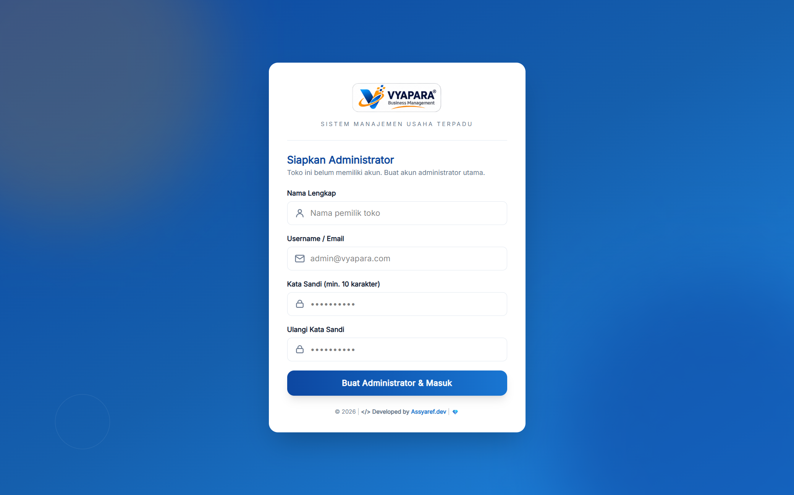
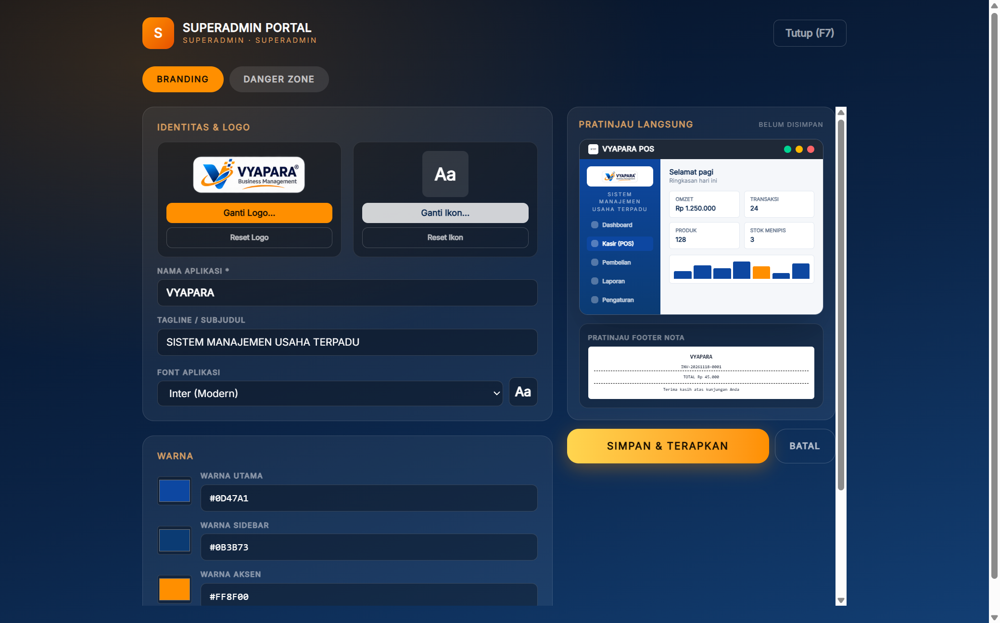

Bab 16 — Manajemen Produk, Retur & Penyesuaian Stok
16.1 Mengelola Produk
- Menu Produk di sidebar (ikon kotak) — seluruh katalog muncul dalam tabel.
- Klik + Tambah Produk → isi Nama Produk (wajib), SKU & Barcode (opsional), Kategori (pilih dari kategori yang sudah ada), Satuan, Harga, HPP, dan Stok awal → Simpan.
- Klik Edit pada baris produk untuk mengubah harga/stok.
- Klik Nonaktif untuk menyembunyikan produk dari POS (tidak terhapus, riwayat transaksi tetap ada).
Catatan: pengisian Kategori dan Satuan hanya bisa memilih dari data yang sudah di-seed (ATK, Kertas, Pcs, Rim, Pack) — belum ada UI tambah kategori/satuan baru; hubungi administrator untuk menambah kategori lewat backend.
16.2 Mencetak Delivery Order (Surat Jalan)
Menu kasir → pilih transaksi → pada modal struk klik Cetak DO (bukan Cetak Nota). Dokumen Delivery Order — Surat Jalan akan tampil dan langsung membuka dialog print Windows. Isinya:
- Logo + nama toko, nomor transaksi
INV-…, tanggal & kasir
- Alamat pelanggan (bila transaksi memiliki pelanggan terdaftar; kosong bila walk-in)
- Tabel item: # | Produk/Layanan | Qty | Harga Satuan | Subtotal
- Total & kolom tanda tangan Penerima dan Kasir
16.3 Retur Penjualan
- Menu Retur Penjualan.
- Panel kiri menampilkan daftar transaksi terbaru — klik tombol Retur pada baris yang ingin dikembalikan.
- Konfirmasi → sistem mencatat retur
RET-YY-NNNN, mengembalikan stok ke gudang, dan mencatat pembalikan HPP untuk laporan laba rugi.
- Riwayat Retur menampilkan seluruh retur: No. Retur, waktu, jumlah item, total HPP, status.
16.4 Penyesuaian Stok (manual)
- Menu Penyesuaian Stok.
- Formulir: pilih produk, pilih arah (Tambah/Kurang), isi Jumlah, Alasan (wajib, mis. “rusak/kadaluarsa/selisih opname”), No. Referensi (opsional).
- Klik Ajukan Penyesuaian — status menjadi Pending.
- Pengguna lain dengan izin
inventory:approve (admin) akan melihat panel Menunggu Persetujuan → Setuju (stok terupdate) atau Tolak.
Perhatian: stok hanya berubah setelah disetujui admin — kasir tidak bisa mengubah stok sesuka hati.
16.5 Menyimpan bukti retur untuk shift
Panel Riwayat Retur berguna untuk mencocokkan barang yang masuk/keluar dengan faktur pembelian — buka di akhir shift dan cek jumlah retur tidak melebihi wajar.
16.6 Mengelola Kategori & Satuan (Admin)
Halaman Katalog (ikon tag, hanya untuk pengguna dengan izin pengaturan) menampilkan dua tab:
- Kategori — tambah/ubah nama/deskripsi/hapus kategori produk. Kategori yang masih dipakai produk tidak bisa dihapus (tahan dulu: pindahkan produk ke kategori lain, baru hapus).
- Satuan — tambah/ubah nama/simbol/hapus satuan pengukuran (mis. Pcs, Rim, Pack). Satuan yang dipakai produk juga tidak bisa dihapus.
- Produk baru dapat memilih kategori & satuan yang sudah dikelola di sini.
Catatan: sebelumnya kategori/satuan hanya bisa memakai seed bawaan (ATK, Kertas, Pcs, Rim, Pack) — fitur ini menutup celah tersebut.
Bab 17 — Faktur Pemasok, Retur Pembelian, Opname & Amankan Data
Bab ini melengkapi siklus pembelian (pembelian → terima → bayar/kembalikan) dan menambahkan cadangan database dari aplikasi.
17.1 Faktur Pemasok
- Buka menu Faktur Pemasok (ikon berkas).
- Klik Faktur Baru → pilih pemasok, isi tanggal faktur & jatuh tempo, pajak (opsional), lalu item-item faktur (deskripsi, qty, harga satuan). Klik + Tambah baris untuk item tambahan → Simpan Faktur.
- Daftar faktur menampilkan status: Belum Lunas / Sebagian / Lunas. Kolom Sisa menunjukkan hutang yang belum dibayar.
- Klik Bayar pada baris faktur → isi nominal (default sisa hutang) + deskripsi (mis. “Transfer BCA 1234”) → Bayar Sekarang. Pembayaran tercatat sebagai transaksi pemasok mengurangi saldo hutang.
Catatan: Faktur ini terpisah dari Purchase Order. Faktur mencatat hutang finansial; penerimaan barang dicatat lewat Pembelian → Terima Barang.
17.2 Retur Pembelian
- Buka menu Retur Pembelian.
- Panel kiri menampilkan PO yang Sudah Diterima. Klik Retur pada PO yang ingin dikembalikan.
- Isi kuantitas retur per baris (tidak boleh melebihi jumlah diterima), tambahkan catatan (mis. “2 pcs rusak saat bongkar”) → Ajukan Retur.
- Stok otomatis berkurang sebesar retur (
movement return_in), hutang pemasok otomatis disesuaikan, dan retur muncul di panel Riwayat Retur Pembelian.
17.3 Opname Stok & Alarm Minimum/Maksimum
- Buka menu Opname Stok — kartu valuasi di atas menampilkan nilai stok (HPP & harga jual).
- Tab Opname Stok → isi lokasi (opsional) & catatan → Buat Sesi Opname. Pilih produk di dropdown, isi Fisik (hasil hitung), klik Tambah — selisih otomatis ditampilkan (merah bila kurang, hijau bila lebih). Ulangi untuk semua produk, lalu Selesaikan Opname & Terapkan Selisih.
- Tab Setelan Alarm Stok → pilih produk → isi Stok Minimum / Maksimum / Titik Reorder → centang Aktifkan alarm stok menipis → Simpan Setelan. Mesin opname dan alarm minimum memakai sistem yang sama sehingga daftar stok rendah di Dashboard valid.
Perhatian: menyelesaikan opname menerapkan selisih ke stok dan tidak dapat dibatalkan. Pastikan hitungan fisik sudah final sebelum menyelesaikan sesi.
17.4 Backup & Restore Database
- Menu Pengaturan → tab Backup & Restore (hanya untuk admin/setting:write).
- Klik Buat Backup Sekarang → pilih lokasi & nama file
.vyapara-backup. File tersebut adalah salinan database penuh yang lolos pemeriksaan integritas.
- Untuk memulihkan: klik Restore dari File → pilih file backup → konfirmasi. File asli disimpan otomatis sebagai
vyapara.db.pre-restore sebelum diganti; aplikasi memuat ulang setelah restore berhasil.
- Tips: simpan backup di minimal 2 lokasi (mis. USB + folder cloud). Backup dianjurkan setiap akhir shift/minggu. Jangan hapus
.pre-restore sampai yakin hasil restore benar.
Penting: file backup di direktori root drive (mis. E:\) dapat gagal bila sistem tidak memberi izin tulis (EPERM). Gunakan folder yang bisa ditulis, mis. D:\Backup\.
Bab 18 — Pembaruan Aplikasi, Dashboard Pemilik & Deployment Server
18.1 Pembaruan Aplikasi (Auto-Update)
- Instalasi rilis baru otomatis terdeteksi melalui GitHub Releases (
owner: assyaref / repo: VYAPARA).
- Buka Pengaturan → Pembaruan Aplikasi untuk melihat versi terpasang dan memeriksa pembaruan baru.
- Klik Periksa Pembaruan — jika ada rilis baru, status berubah menjadi Baru.
- Klik Unduh & Pasang — progress download tampil — lalu klik Restart & Pasang; aplikasi tertutup & membuka versi baru.
- Tanpa jaringan, periksa pembaruan menampilkan pesan “Update check gagal …” — aplikasi tetap berjalan normal.
Catatan rilis: pemilik membuat rilis di GitHub dengan file VYAPARA-Setup-<versi>.exe (nama file harus cocok dengan artifactName di package.json). Auto-update hanya bekerja pada aplikasi terinstal (production), bukan electron:dev.
18.2 Installer Distribution Pipeline
- Jalankan
node scripts/build-installer.mjs — pipeline selalu menjalankan: vite build → electron-builder (NSIS) → checksum SHA-256 ke release/SHA256SUMS.txt.
- Mode default unsigned — Windows menampilkan SmartScreen untuk pengguna baru.
- Bila sudah memiliki sertifikat Authenticode: set
CSC_LINK & CSC_KEY_PASSWORD, lalu jalankan ulang — installer ditandatangani otomatis. Set SIGNING_REQUIRED=true untuk menolak build unsigned. Lihat SIGNING.md.
18.3 Owner Web Dashboard — Multi-Outlet
- Owner dashboard tersedia di
https://<host-sync>/admin — self-contained, tanpa aset eksternal.
- Gambar: token
SYNC_ADMIN_TOKEN (dari .env server) → halaman menampilkan: total outlet, perangkat aktif, event diterima, konflik/duplikat, detail per outlet, jenis event teratas, daftar perangkat terdaftar.
- Refresh otomatis tiap 10 detik; token hanya disimpan di memori (hilang saat tab ditutup).
- Semua endpoint
/admin/api/* dilindungi Bearer token; tanpa token → 401.
Penting: dashboard tidak bisa menghitung omzet rupiah toko (server sync tidak menyimpan data penjualan, hanya metadata sync). Dashboard memantau kesehatan & aktivitas replikasi — omzet & laporan finansial tetap dari aplikasi desktop tiap outlet.
18.4 Mendeploy Sync Server (Staging/Production)
- Siapkan VPS Linux + Docker. Salin repo ke server (atau gunakan image bawaan).
docker build -f deploy/Dockerfile -t vyapara-sync . — image self-contained; bundle dibangun dari source di dalam build (esbuild alias, tanpa npm workspaces).- Salin
deploy/.env.example → .env → isi SYNC_ENROLLMENT_SECRET & SYNC_ADMIN_TOKEN (openssl rand -hex 32) & SYNC_DB_PATH=/data/sync-server.db & PORT=8787.
docker compose up -d --build → verifikasi: curl http://127.0.0.1:8787/v1/sync/health → {"ok":true}.- TLS via nginx — template
deploy/nginx.conf + certbot; jangan buka port 8787 ke publik.
- Jalankan staging acceptance sesuai DEPLOY.md §6 sebelum produksi; catat hasilnya di laporan phase Anda.
Batasan: Docker image yang dibuat di mesin ini hanya diuji lokal — smoke test health + /admin + /admin/api/overview LOLOS, tetapi belum diuji pada VPS sungguhan. Deployment & monitoring publik tetap menjadi tugas Anda; lihat deploy/DEPLOY.md.
Bab 19 — Kasir Profesional: Diskon, PPN, Grosir, Invoice & Shift
19.1 Diskon di Kasir
- Saat checkout, panel transaksi menampilkan Diskon — klik salah satu preset 0/5/10/15% atau isi nominal Rupiah langsung di kotak input.
- Diskon dihitung dari subtotal sebelum pajak. Baris “Diskon diterapkan” muncul berwarna hijau dengan nominal potongan.
- Transaksi tersimpan dengan diskon pada
discount_amount — laporan laba rugi menghitung HPP dari nilai sebenarnya.
19.2 PPN (Pajak)
- Menu Pengaturan → Pengaturan Aplikasi → tambahkan kunci
tax_rate_bps (basis poin: 1100 = 11%).
- Setelah tersimpan, kasir otomatis menampilkan baris “PPN xx%” dan menjumlahkan ke Total. Pajak dihitung setelah diskon.
- Untuk menghapus PPN, set
tax_rate_bps = 0.
19.3 Harga Grosir
- Edit produk → kolom Harga Grosir (Rp) dan Min. Qty Grosir (default 10).
- Isi harga grosir lebih rendah dari harga eceran. Harga grosir hanya aktif bila pelanggan membeli ≥ Min. Qty Grosir unit dalam satu transaksi.
- Harga otomatis turun di kasir (keranjang memakai harga grosir) dan di struk/invoice. Kolom harga produk menampilkan lencana hijau Grosir ≥10.
19.4 Mencetak Invoice (Nota Resmi)
- Menu Laporan & Analisis → tab Transaksi.
- Klik tombol Invoice pada baris transaksi manapun — dokumen A4 lengkap tercetak (kop, daftar item, total, tanda tangan).
- Dari kasir juga tersedia tombol Cetak Invoice di modal struk.
19.5 Label Barcode
- Menu Produk → tombol Cetak Label (hijau) di kanan atas.
- Centang produk (hanya yang memiliki barcode), atur Salinan per label, klik Cetak Sekarang — label 38×29mm tercetak (nama + barcode Code128 + harga).
19.6 Rekap Shift (Dompet Kas)
- Menu Laporan & Analisis → tab Rekap Shift.
- Tiap shift dompet kas ditampilkan: kasir, jam buka/tutup, saldo awal, penjualan tunai, jumlah transaksi, perkiraan kas (saldo awal + tunai), saldo akhir aktual, dan selisih (hijau = lebih, merah = kurang).
- Gunakan untuk rekonsiliasi kas akhir shift — selisih negatif harus diinvestigasi.
19.7 Loyalty Points & Kredit (Piutang) Pelanggan
Migrasi 016 menambahkan loyalty points ke setiap pelanggan. Cara kerja:
- Di layar kasir, bagian Pelanggan (opsional) — ketik nama/kode/telepon dan pilih.
- Pelanggan terpilih menampilkan nama, saldo piutang, dan poin kanan bawah picker.
- Poin diperoleh otomatis setiap transaksi selesai: Rp 10.000 = 1 poin (dapat diubah di Pengaturan dengan kunci
loyalty_earn_amount).
- Poin bisa dipakai sebagai diskon: centang “Pakai N poin” — setiap poin bernilai Rp 100 (kunci
loyalty_redeem_amount). Diskon diterapkan sebelum PPN.
- Pelanggan terpilih membuka tombol pembayaran Kredit — penjualan dicatat sebagai piutang (saldo pelanggan bertambah; lihat menu Pelanggan → terima pembayaran).
- Harga grosir tetap otomatis (lihat 19.3) saat qty ≥ min — pelanggan mendapat manfaat grosir + loyalti sekaligus.
Catatan: poin tidak hangus; tidak ada kebijakan kedaluwarsa saat ini. Penghapusan data pelanggan menghapus poinnya juga.
Bab 20 — Aktivasi Lisensi & Serial Number
Instalasi yang sudah terpasang penuh tetap tidak dapat dipakai sebelum diaktivasi dengan Serial Number yang sah. Pembatasan ini mencegah penggunaan salinan aplikasi di luar lisensi yang disetujui.
20.1 Mengapa perlu aktivasi?
- Setiap instalasi terkait ke satu serial number yang diterbitkan oleh pemilik/penjual aplikasi.
- Serial tersebut tercatat di server lisensi — termasuk perangkat mana yang sudah memakainya.
- Pemilik dapat mencabut (revoke) serial kapan pun, sehingga instalasi yang bersangkutan tidak dapat dipakai lagi.
20.2 Layar aktivasi — pertama kali menjalankan
1
Pasang aplikasi dari installer resmi (VYAPARA-Setup-1.0.0.exe). Jalankan aplikasi seperti biasa.
2
Muncul layar “Aktivasi Lisensi” — bukan layar login dan bukan layar setup admin. Isi Dua kolom wajib: URL Server Lisensi dan Serial Number; nama toko opsional.
3
Klik “Aktivasi Sekarang”. Aplikasi mengirim serial ke server lisensi; server memverifikasi dan mengikat serial ke perangkat ini.
4
Setelah berhasil, layar berubah menjadi “Siapkan Administrator” — buat akun pemilik seperti biasa (nama, email, kata sandi ≥ 10 karakter).

20.3 Kapan aplikasi meminta aktivasi lagi?
- Instansi pertama kali di perangkat ini — wajib ada serial.
- Setelah factory reset (Danger Zone → Reset Pabrik) — serial dapat dipakai kembali (selama belum habis kuota aktivasi).
- Jika serial dicabut pemilik — aplikasi kembali ke layar aktivasi dengan pesan “Lisensi Dinonaktifkan” pada kunjungan berikutnya.
- Offline terlalu lama (30+ hari sejak verifikasi terakhir) — dianggap tidak valid; aplikasi menolak masuk sampai terhubung ke server lisensi lagi.
Penting: Saat toko offline dalam jangka waktu lama (mis. libur panjang), aplikasi tetap berjalan — lisensi tidak kadaluarsa setelah sekian hari; yang 30 hari adalah batas belum pernah verifikasi ulang, bukan kadaluarsa.
20.4 Bagi Pembeli: cara mendapatkan serial
- Hubungi Assyaref.dev (tautan WhatsApp di layar login) — sertakan nama toko dan jumlah perangkat yang akan dipakai.
- Anda akan menerima URL server lisensi + Serial Number (format
VYPR-XXXX-XXXX-XXXX).
- Masukkan keduanya di layar aktivasi saat pertama kali menjalankan.
20.5 Bagi Pemilik Aplikasi (Publisher): menerbitkan serial
1
Pilih organizer: tunggu permintaan pembeli → catat nama toko + jumlah perangkat.
2
Generate serial via POST /admin/licenses ke server sinkronisasi Anda (dengan header Authorization: Bearer <SYNC_ADMIN_TOKEN>), body: {"organizationName":"Toko X","maxActivations":2}.
3
Respons berisi serial sekali saja (VYPR-…) — salin dan kirim ke pembeli beserta URL server.
4
Invoice dikirim serial + URL. Pembeli menginstall dan aktivasi di komputernya masing-masing.
5
Untuk mencabut serial (mis. berhenti bayar/salah perangkat): POST /admin/licenses/revoke dengan licenseId atau gunakan owner dashboard → Licenses → Revoke.
20.6 Batas penggunaan serial
| Aturan | Default | Dapat diubah |
|---|
| Aktivasi per serial | 1 (dapat dibuat 1–999 saat generate) | Ya, saat generate |
| Masa berlaku sejak aktivasi | Selamanya (selama tidak dicabut) | Ya, expiresAt saat generate |
| Perangkat per organisasi | Tidak dibatasi | Gunakan serial terpisah per cabang |
20.7 Troubleshooting aktivasi
| Masalah | Solusi |
|---|
| “Format serial tidak valid” | Pastikan awalan VYPR- dan huruf besar (bukan kecil), serta 14 karakter kunci setelahnya. |
| “Serial number tidak dikenal” | Serial belum pernah di-generate / salah ketik. Mintalah penerbitan ulang. |
| “Serial sudah dipakai di perangkat lain” | Serial sudah mencapai kuota aktivasi. Minta penerbit menaikkan maxActivations atau terbitkan serial baru. |
| “Tidak dapat menghubungi server lisensi” | Periksa URL (harus https://…), koneksi internet, dan firewall toko mengizinkan akses keluar. |
| “Lisensi Dinonaktifkan” | Serial dicabut oleh penerbit; hubungi penerbit untuk verifikasi pembayaran/dukungan. |
Bab 21 — Portal Superadmin: Kustomisasi Brand
Portal tersembunyi untuk pemilik/penerbit aplikasi — mengubah tampilan (brand) sepenuhnya lewat UI, tanpa mengedit kode. Akses dengan F7 dari mana pun di aplikasi.
Akses terbatas: hanya peran superadmin. Pengguna biasa — termasuk admin — tidak dapat membuka portal meski menekan F7.
21.1 Membuka portal
1
Tekan F7 di layar mana pun (saat login / setelah login).
2
Masukkan kredensial superadmin: superadmin@assyaref.dev / kata sandi yang dibagikan oleh penerbit.
3
Portal terbuka — dua tab: Branding dan Danger Zone.
21.2 Tab Branding — identitas & logo
Gunakan kartu Identitas & Logo untuk mengganti dua aset berbeda:
| Elemen | Digunakan di | Format |
|---|
| Logo (kotak putih login/sidebar) | Layar login, sidebar, preview, dokumen cetak | PNG/JPG/WEBP/SVG/GIF (≤ 2 MB) |
| Ikon (ikon aplikasi di jendela/taskbar) | Ikon jendela & taskbar (native image), installer baru | PNG/JPG/ICO/WEBP (≤ 5 MB) |
4
Klik Ganti Logo… atau Ganti Ikon… → pilih file → jendela langsung menampilkan ikon baru (semua jendela yang sedang terbuka berubah seketika).
5
Klik Reset Logo / Reset Ikon untuk kembali ke bawaan.
21.3 Tab Branding — nama, tagline, font
- Nama Aplikasi — tampil di title bar, sidebar, login, nota cetak, dan header invoice.
- Tagline / Subjudul — muncul di bawah logo di login, sidebar, dan struk.
- Font Aplikasi — 7 pilihan: Inter, Segoe UI, Poppins, Roboto, Georgia, Courier New, Monospace. Dipilih dari dropdown; seluruh tampilan berubah font seketika setelah simpan & terapkan.
21.4 Tab Branding — warna
| Warna | Dipakai untuk |
|---|
| Warna Utama | Gradien sidebar atas, tombol utama (Simpan), aksen judul |
| Warna Sidebar | Gradien sidebar bawah, menu aktif |
| Warna Aksen | Highlight kasir aktif di sidebar, langkan iklan |
Ketik langsung kode hex (#0D47A1) atau klik kotak warna untuk memilih.
21.5 Tab Branding — footer nota
Kolom Footer di nota (maks 120 karakter) mengisi teks paling bawah pada:
- Struk thermal (kasir)
- Invoice A4 (laporan transaksi & POS)
Contoh: “Terima kasih sudah berbelanja di Toko Sinar — 0812-3456-7890”
21.6 Pratinjau Langsung
Kartu di kolom kanan menunjukkan pratinjau mini aplikasi — title bar, sidebar, KPI tiles, grafik bar, dan footer nota — yang berubah real-time saat Anda mengutak-atik nama/tagline/warna/font, bahkan sebelum klik Simpan.

21.7 Tab Danger Zone — aksi penghancur (hati-hati)
| Aksi | Efek |
|---|
| Hapus Semua Sesi | Memaksa semua pengguna login ulang di semua perangkat. |
| Hapus Semua Akun Admin | Menghapus SEMUA akun (kasir, admin, viewer) — kecuali superadmin. Data transaksi/produk/pelanggan tetap ada. |
| Factory Reset | Menghapus SELURUH data toko: produk, transaksi, pelanggan, pemasok, keuangan — kecuali superadmin dan konfigurasi bawaan. Wajib ketik HAPUS-SEMUA-DATA. |
Tidak dapat dibatalkan. Semua aksi di Danger Zone tidak memiliki undo. Backup dulu (Bab 12) bila masih ragu.
21.8 Keyboard shortcuts
| Tombol | Fungsi |
|---|
| F7 | Buka/tutup portal superadmin |
| Esc | Tutup portal |
21.9 Siapa yang boleh mengakses?
Hanya akun dengan peran superadmin — saat ini satu akun yang disediakan penerbit. Admin biasa tidak dapat membuka portal; Danger Zone ditolak oleh main-process meski UI dimanipulasi.
Bab 22 — Loyalty Points & Piutang Pelanggan
22.1 Loyalty Points — cara kerja
- Setiap pelanggan memiliki saldo poin yang bertambah otomatis pada setiap transaksi selesai.
- Default: Rp 10.000 = 1 poin (dapat diubah di Pengaturan dengan kunci
loyalty_earn_amount).
- Saldo poin tidak hangus; tidak ada kedaluwarsa.
22.2 Mendapatkan poin di kasir
- Di layar kasir, bagian bawah → Pelanggan (opsional).
- Ketik nama/telepon/kode — daftar pelanggan muncul; klik salah satu.
- Pelanggan terpilih menampilkan: nama, saldo piutang, dan poin di kanan bawah picker.
- Checkout seperti biasa — poin otomatis ditambahkan berdasarkan total (setelah diskon, sebelum/sesudah PPN? → dihitung dari total akhir).
- Lihat laporan: menu Pelanggan → detail pelanggan → jumlah poin.
22.3 Menggunakan poin sebagai diskon
- Pilih pelanggan di kasir — centang “Pakai N poin (− Rp X)”.
- Diskon poin diterapkan sebelum PPN dihitung.
- Aktif hanya jika saldo poin > 0.
22.4 Metode pembayaran Kredit (piutang)
- Pilih pelanggan → tombol pembayaran berubah menjadi empat pilihan + Kredit.
- Pilih Kredit → Klik Bayar (F10) — transaksi tercatat sebagai penjualan kredit; saldo piutang pelanggan bertambah sebesar total.
- Piutang muncul di menu Pelanggan → badge piutang merah.
- Pelanggan dapat membayar sebagian/lunas di menu Pelanggan → tombol Terima Pembayaran Piutang.
22.5 Laporan Piutang (AR Aging)
Menu Laporan & Analisis → tab Piutang — tabel semua pelanggan dengan saldo > 0:
| Kolom | Keterangan |
|---|
| Kode / Nama | Identitas pelanggan |
| Total Piutang | Sisa piutang berjalan |
| Hari Belum Bayar | Selisih hari sejak transaksi kredit pertama yang masih belum lunas |
| Aging | 0-30 31-60 61-90 >90 — semakin tua semakin berbahaya |
| Aktivitas Terakhir | Tanggal transaksi terakhir |
Total baris di footer; dapat di-export CSV dengan tombol Export CSV.
22.6 Contoh alur piutang
- Budi membeli total Rp 80.000 secara Kredit.
- Menu Pelanggan → Budi → piutang Rp 80.000.
- Satu bulan kemudian Budi membayar Rp 50.000 (Pelanggan → Terima Pembayaran).
- Sisa piutang = Rp 30.000 — aging berubah menjadi 31-60 sejak transaksi itu.
Tip pasar ATK: pelanggan langganan sering “titip bayar” — gunakan piutang untuk mencatat hutang, bukan “uang masuk/kasir”.
22.7 Memastikan poin & piutang sinkron antar perangkat
Poin dan piutang adalah bagian dari data pelanggan — disinkronkan via Offline Sync seperti semua data lain (lihat Bab 10). Transaksi penjualan kredit dan pembayaran piutang keduanya menghasilkan event yang dikirim ke server.
Lampiran A — Glossary & FAQ
A.1 Glossary
| Istilah | Arti |
|---|
| Outbox | Tabel sync_outbox — antrean event yang belum dikirim ke server |
| Backoff | Strategi retry dengan jeda meningkat (2s → 4s → 8s → … → max 5 menit) |
| Conflict Remote Version | remoteVersion per agregat di server — digunakan untuk deteksi konflik |
| Cursor | Penanda posisi unduh percakapan server — disimpan di sync_state |
| Idempotency | Menerima event yang sama berkali-kali tanpa efek tambahan (key idempotency_key/event_id) |
| Inbound apply | Proses memasukkan event dari server ke database lokal |
| Quarantine | Tabel untuk event yang gagal diterapkan — disimpan untuk ditinjau, tidak dihapus |
| RBAC | Role-Based Access Control — izin ditentukan oleh peran pengguna |
| Receipt | Bukti sync_applied_events — bukti bahwa event sudah/terapkan |
| Tenant / Organisasi | Entitas bisnis terisolasi; 1 organisasi = 1 properti bisnis |
| WAL | Write-Ahead Logging — mode SQLite untuk concurrency tinggi |
A.2 FAQ
Q: Boleh beberapa kasir login di komputer yang sama?
A: Boleh — aplikasi multitasking. Setiap login membuat sesi terpisah. Sesi kadaluarsa 12 jam.
Q: Apakah saya bisa buka aplikasi offline?
A: Ya — 100% fitur bekerja offline kecuali sinkronisasi (yang akan otomatis saat online).
Q: Bagaimana jika komputer saya hilang dicuri?
A: Data lokal bisa dibaca siapa pun yang mencuri laptop (kecuali enkripsi disk aktif). Gunakan BitLocker. Password akun tidak bisa diambil meski pencuri membuka aplikasi (butuh email + password).
Q: Berapa harga lisensi?
A: Tanyakan kepada vendor/partner yang menyediakan aplikasi ini. Dokumen ini tidak mencantumkan model lisensi.
Q: Apakah laporan bisa diexport?
A: Belum ada tombol Export CSV/Excel. Gunakan fitur Print dan simpan sebagai PDF dari dialog print.
Q: Apakah aplikasi bisa untuk multi-toko?
A: Ya — dengan sync server. Setiap toko install aplikasi yang sama; setiap toko mendaftar sebagai perangkat organisasi yang sama; data sinkron otomatis. Tetapi dashboard owner terpusat belum tersedia — Anda harus melihat masing-masing toko di perangkat/aplikasi terpisah.
Q: Katalog produk kosong?
A: Fresh install — tidak ada produk. Produk harus dibuat lewat backend/administrator (UI belum tersedia).
Q: Bagaimana cara lapor bug?
A: Hubungi vendor. Sertakan: versi aplikasi (Pengaturan → Tentang), langkah reproduksi, dan screenshot.
Q: Apakah data saya bisa di-pulihkan tanpa backup?
A: Tidak. File vyapara.db satu-satunya salinan pada komputer toko — backup adalah satu-satunya jalan.
Q: Server sinkronisasi wajib?
A: Tidak. Tanpa server, transaksi tetap tercatat lokal. Hanya fitur multi-perangkat yang tidak bekerja.